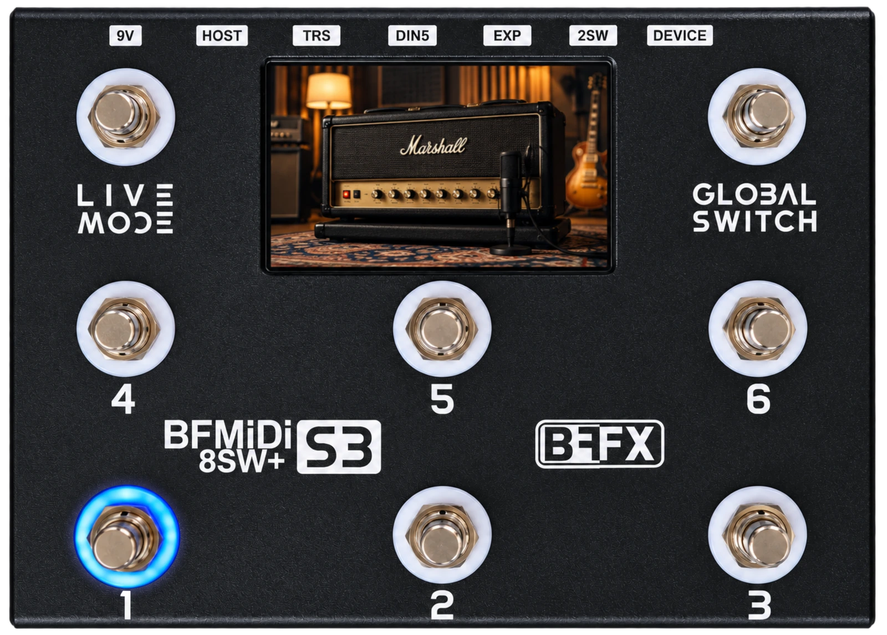
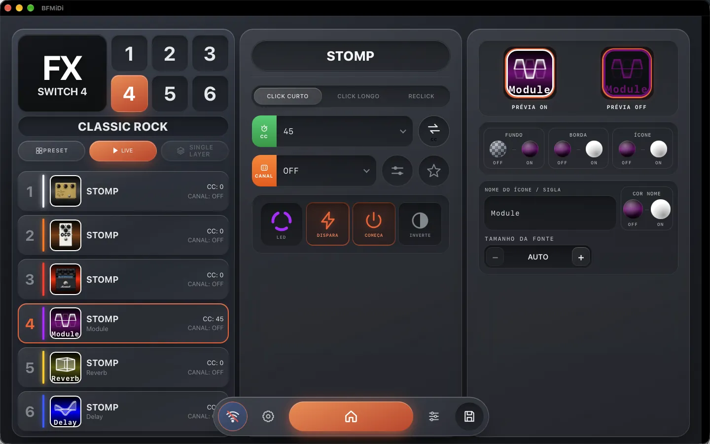
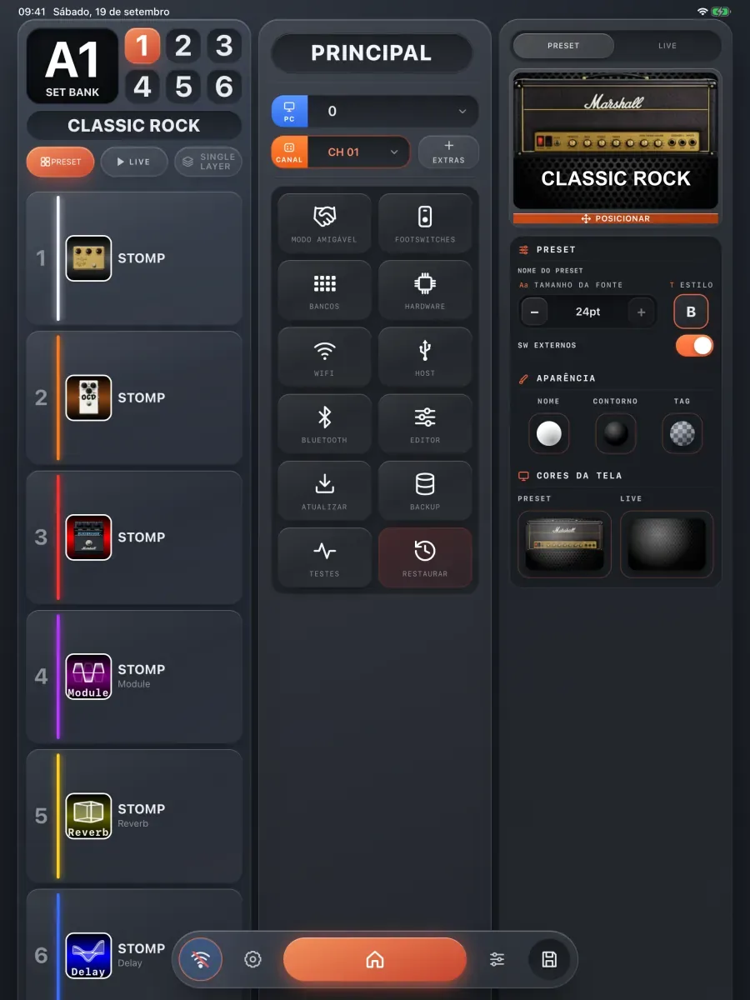
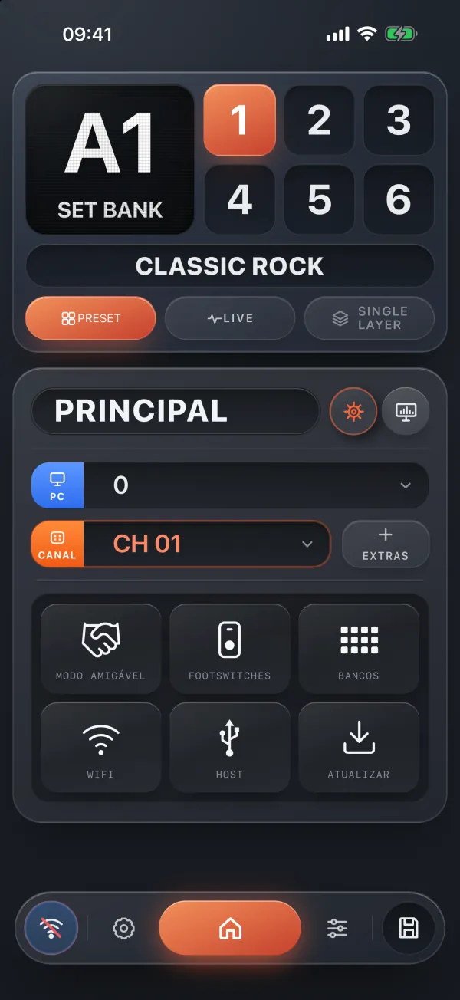

Recomendado para este dispositivo
Online no navegador
Chrome ou Edge no computador
Nada para instalar: conecta pelo cabo USB e, sem o cabo, abre no modo offline. Dá para montar os presets mesmo sem o pedal conectado.

BFMiDi Editor Versão 14
O mesmo editor da sua BFMIDI no navegador, no Windows, no Mac, no iPhone e no iPad.
Escolha onde usar
Chrome ou Edge no computador
Nada para instalar: conecta pelo cabo USB e, sem o cabo, abre no modo offline. Dá para montar os presets mesmo sem o pedal conectado.
Windows 10 e 11 (64 bits)
Conecta pelo Wi‑Fi do pedal, pela rede de casa ou pelo cabo USB, e abre para editar mesmo sem o pedal. Instala por usuário, sem pedir senha de administrador.
macOS 14 ou mais recente
Conecta pelo Wi‑Fi do pedal, pela rede de casa ou pelo cabo USB, e abre para editar mesmo sem o pedal.
iOS e iPadOS 17 ou mais recente
Conecta pelo Wi‑Fi do pedal ou pela rede de casa, e abre para editar mesmo sem o pedal. O mesmo download serve o iPhone e o iPad.
Android 7 ou mais recente
Conecta pelo Wi‑Fi do pedal ou pela rede de casa, e abre para editar mesmo sem o pedal.



Presets, footswitches, tela e LEDs da sua BFMIDI, tudo num lugar só.
10 × 6
10 bancos, de A a J, com 6 presets cada (4 ao alcance do pé na MICRO).
Pé a pé
Cada footswitch com o seu comportamento: stomp, tap tempo, macros e mais.
A sua cara
Ícones, cores e imagens na tela da controladora, e a cor do anel de LED de cada footswitch.
Nomes, não números
CC e PC com o nome certo para dezenas de pedais e processadores: Kemper, Valeton GP‑5, Ampero…
Wi‑Fi do pedal, rede de casa ou cabo USB — e até sem o pedal.
http://192.168.4.1
Rede BFMIDI_WIFI, senha bfmidi@editor
http://bfmidi.local
Pedal e aparelho na mesma rede
Chrome ou Edge
No computador, e nos apps de Windows e Mac
Modo offline
Nos apps e no editor online
Para 8SW+, 6SW+, NANO+ e MICRO Backup dos presets e atualização do firmware no próprio editor